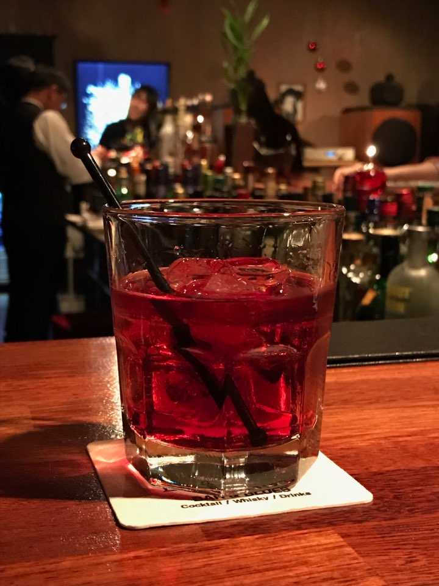

B&B
비앤비
#유럽 바 #오페라 #달콤하고 부드러운 #탄산 없음 #적당한 도수

Ingredients
- 브랜디 30ml
- 베네딕틴 30ml
- 얼음 100g
- 장식용 레몬 조각
Recipe
- 하이볼 잔에 얼음을 채워줍니다.
- 브랜디 30ml를 넣습니다.
- 베네딕틴 30ml를 추가합니다.
- 막대기로 잘 저어줍니다.
- 마지막으로 장식용 레몬 조각을 올려주면 완성!
History
비앤비, 베네딕틴(Benedictine) 돔 리큐어와 브랜디를 혼합하여 만드는 이 칵테일은 간단하면서도 고급스러운 맛의 조화로 유명합니다.
이 음료는 1930년대에 인기를 얻기 시작하여, 고급 리큐어의 세계에서 클래식한 선택으로 자리 잡았습니다. 비앤비는 그 깊은 향과 부드러운 맛으로 많은 이들에게 사랑받고 있으며, 식후 디제스티프로 특히 인기가 높습니다.
이 칵테일의 인기는 단순히 맛있는 조합 때문만이 아니라, 그것이 상징하는 전통과 우아함 때문이기도 합니다.
비앤비 칵테일의 기원은 분명하며, 그 역사는 1930년대로 거슬러 올라갑니다. 이 칵테일은 베네딕틴 돔 리큐어와 브랜디를 혼합하여 만들어진 것으로, 간단하지만 고급스러운 맛의 조화로 인기를 끌었습니다. 비앤비는 원래 베네딕틴 돔과 브랜디를 별도로 제공하던 것에서 발전한 칵테일입니다. 손님들이 두 재료를 직접 혼합해 마시기 시작하면서, 이 조합의 인기가 높아졌습니다.
비앤비의 인기는 시간이 지남에 따라 꾸준히 유지되었으며, 전통적인 칵테일로서 그 위치를 확고히 하였습니다. 이 칵테일은 전 세계 많은 바와 레스토랑에서 클래식한 선택으로 제공되고 있습니다.